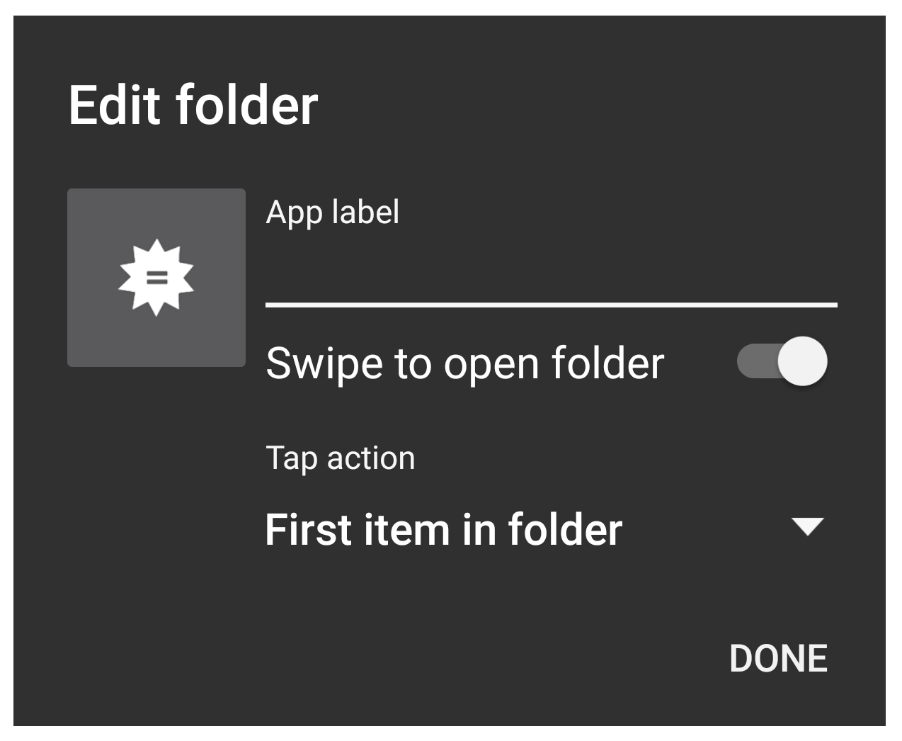

homepage - tags - github - site code
May 15 2018
I personally use Android because I prefer the freedom the operating system gives you. I like having a file explorer I can use to examine files; I like the fact I can manipulate files directly; I like having an option to get lots of FOSS apps using f-Droid rather than Google Play or the App Store; and I like being able to theme the look of my phone arbitrarily.
There are several popular "launchers" for Android - programs that act as an alternative to the default Home screen that can provide the user power to space apps differently, create shortcuts or folders, use gesture controls, or even use custom iconsets.
I've been using Nova Launcher Prime (although it isn't FOSS) - the free version of which is quite good.
wallpaper/icon/gestures/swipe folders
There are probably many wallpapers out on the net by now, but I use a minimal wallpaper generated by a neat project someone posted on reddit a while back. It uses OpenStreetMap to generate beautiful 2-color maps of any location you like.
https://alvarcarto.com/phone-background/
I prefer a minimal look, so I picked a popular icon pack that displays your apps as simple 2D white icons.
Note - make sure you get an iconset that supports dynamic calendars, if you'd like the icon for your calendar app to cycle through dates.
You can also set nova not to display names of apps (an icon is worth a thousand app names, right?).
With a simple wallpaper, minimal icons, and far less text, the look of the phone is right where i want it to be:
try finding venmo now bro
Android and iOS at this point both give you the ability to create app folders natively - but with nova, you can also change how a folder is opened.
Long-pressing on a nova folder allows you to go to an Edit menu and select "Swipe to open folder". This option changes the folder to only display the first icon in it by default, letting you tap to open the first app or swipe to open the whole thing.

there is no swipe left or right; only up
Using swipe folders rather than regular ones not only allows you to access the first app in them faster, they also help hide any apps that don't have custom icons, and thus do not fit our a e s t h e t i c:

minimalist more like conformist
Nearly half the icons on my homepage actually conceal folders, but it still looks nice and clean.
Nova gestures are available under Settings > Gestures. There are two specific ones I use frequently: I bound Swipe up on the home screen to open the app drawer, and Swipe down to open notifications.
If you're familiar with Paranoid Android or CyanogenMod - popular ROMs from back in the wild wild west days of Android - you might miss having Pie controls. This is a feature that allows you to swipe in from the bezel of your screen and access a custom button dialogue.
No worries! Using something like Pie Control allows you to replicate this thumb-travel-saving trick.

too big screen, too small fingers? no problem
I tried out live wallpapers at one point, but found they could sometimes be too much and didn't quite find the variety you can find with static wallpapers. Maybe it's better now.
Nova lets you easily backup your configuration under Settings > Backup and Import Settings. If I move lots of apps around, I'll back up Nova and save the resulting file to a folder my phone shares with my server so I'll have it on the next phone I use.